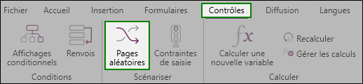
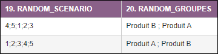

PRÉSENTER ALÉATOIREMENT DES PAGES
La rotation aléatoire des pages permet de concevoir un questionnaire dans lequel des blocs de pages apparaissent dans un ordre aléatoire pour chaque nouveau répondant. Cela permet de minimiser le biais induit par un ordre donné, et d'améliorer la qualité des données dans certains cas spécifiques.
Pour mettre en place une rotation aléatoire des pages, procédez comme suit :
-
Allez dans l'onglet Contrôles.
-
Cliquez sur Pages aléatoires depuis le groupe Scénariser.

-
Renseignez la syntaxe à utiliser dans le champ prévu à cet effet :

Définition de la syntaxe :
-
« - » : Permet de définir un ensemble de page sans avoir à énumérer l’ensemble des pages.
Exemple : « 2 – 6 » équivaut à « 2 ; 3 ; 4 ; 5 ; 6 ».
-
« (...) » : Les parenthèses permettent de définir un groupe de pages qui seront affichées aléatoirement.
Exemple : « (2 – 6) » signifie que les pages 2 à 6 s’afficheront dans un ordre aléatoire.
-
« % » : Le pourcentage permet de définir un nombre fixe de page à afficher parmi un groupe de pages aléatoire.
Exemple : « (2 – 6) %3 » signifie qu’on affichera 3 pages aléatoirement parmi les 5 pages définies dans le groupe aléatoire. Il sera donc possible d’obtenir les pages « 4 ; 6 ; 2 » ou « 2 ; 5 ; 3 » par exemple.
-
« * » : L’étoile permet de forcer l’affichage d’une page parmi un groupe de pages aléatoire.
Exemple : « (2 ; 3 ; 4* ; 5 ; 6) » signifie que la page 4 apparaîtra toujours dans l'enchaînement aléatoire des pages de ce groupe.
-
« {...} » : Les accolades permettent de définir des sous-groupes de page qui seront affichées aléatoirement.
Exemple : « ({2 ; 3} ; {4 ; 5} ; {7 ; 8}) » signifie que les sous-groupes de page apparaîtront dans un ordre aléatoire. On pourra obtenir les pages « 2;3 ; 7;8 ; 4;5 » ou « 4;5 ; 2;3 ; 7;8 », entre autres.
EXEMPLE :
Une syntaxe complexe sur un formulaire de 15 pages : 1 ; (2 ; 3 ; 4* ; 5)%3 ; 6 - 8 ; ({9;10} ; {11;12} ; {13;14}) ; 15
Scénario :
-
Le formulaire commence toujours par la page 1.
-
Ensuite on affiche aléatoirement 3 pages parmi les pages (2, 3, 4, et 5) en sachant que la page 4 s’affichera toujours en 3ème position de ce groupe de pages.
-
Les pages 6, 7 et 8 s’afficheront toujours dans cet ordre.
-
Puis affichage aléatoire de trois sous-ensembles de pages.
-
La page 15 s’affichera toujours en dernier pour clôturer le questionnaire.
Deux variables sont automatiquement créées lorsqu'une rotation aléatoire des pages est mise en place (ces variables s'afficheront lors de la publication de l’enquête en ligne).

-
Variable RANDOM_SCENARIO
Cette variable permet d'afficher le cheminement des pages aléatoires pour chaque observation.
-
Variable RANDOM_GROUPES
Cette variable permet d'afficher et d'identifier facilement l'ordre d'affichage des blocs de pages préalablement définis.